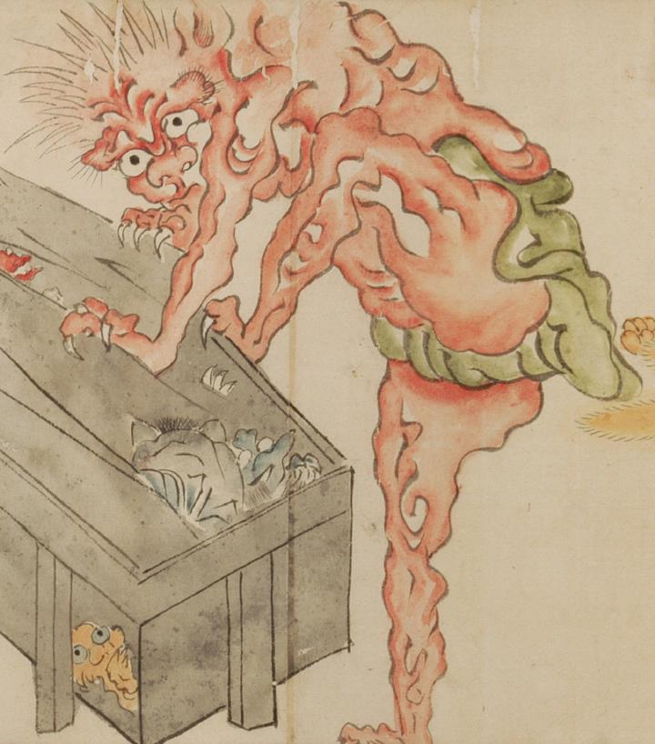

古い唐櫃をこじ開ける巨大な赤鬼。鋭い爪で唐櫃を掴み、中にいる化物たちを厳めしい形相で睨み付けている。筋肉質の片足を唐櫃にかけ、緑色の褌が破けんばかりに力んでいる。
出典：親書誌：U426_nichibunken_0054：百鬼夜行絵巻；ヒャッキヤギョウエマキ／日付：2006／資源識別子：U426_nichibunken_0054_0006_0001
Copyright (c)2010- International Research Center for Japanese Studies, Kyoto, Japan. All rights reserved.